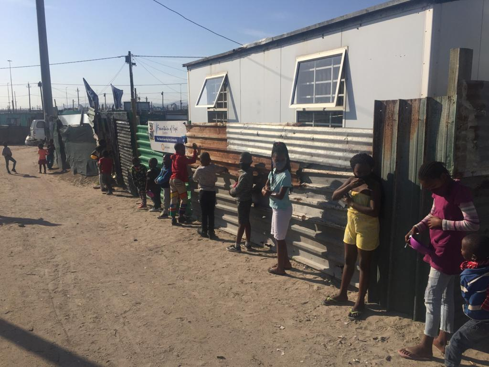

FEEDING SCHEME
FEEDING SCHEME
Fountain of hope is also a home for those in need

AGRICULTURE
AGRICULTURE PROGRAM
WE also grow vegies to help at the soup kitchen
there are also classes for agriculture where people are taught how to
grow their own vegies at home using vertical farming.

CHURCH
church members
we have services on wednesdays,fridays at 18:00 till 20:00.
Sundays sevices start at 10:00 till 12:00